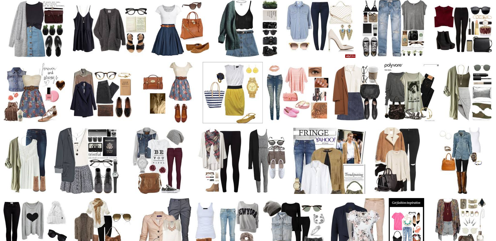
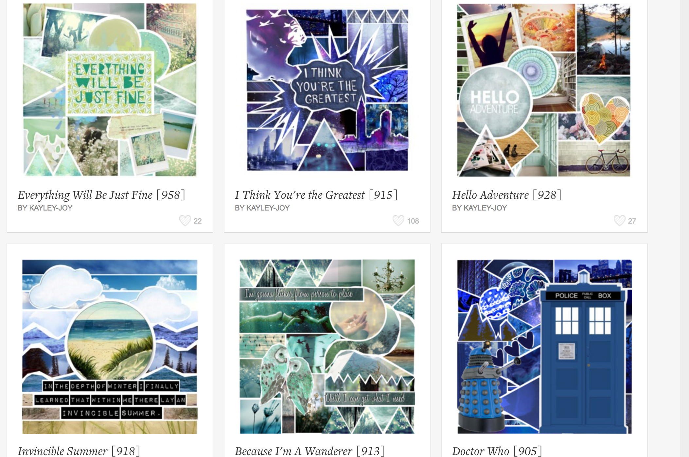
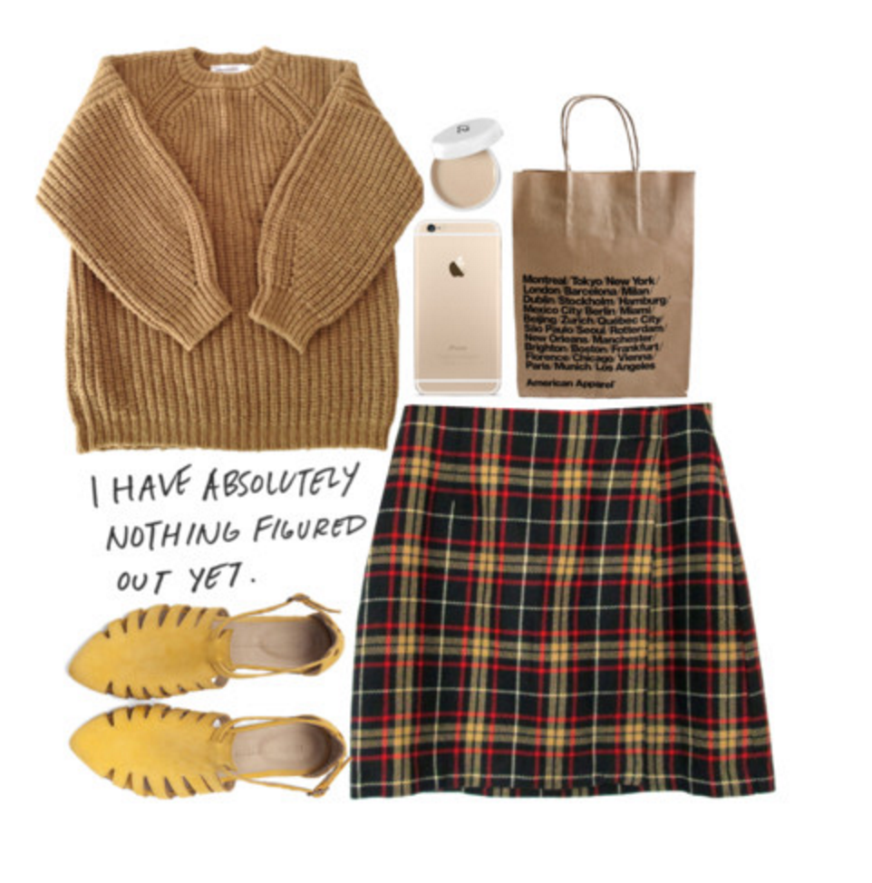
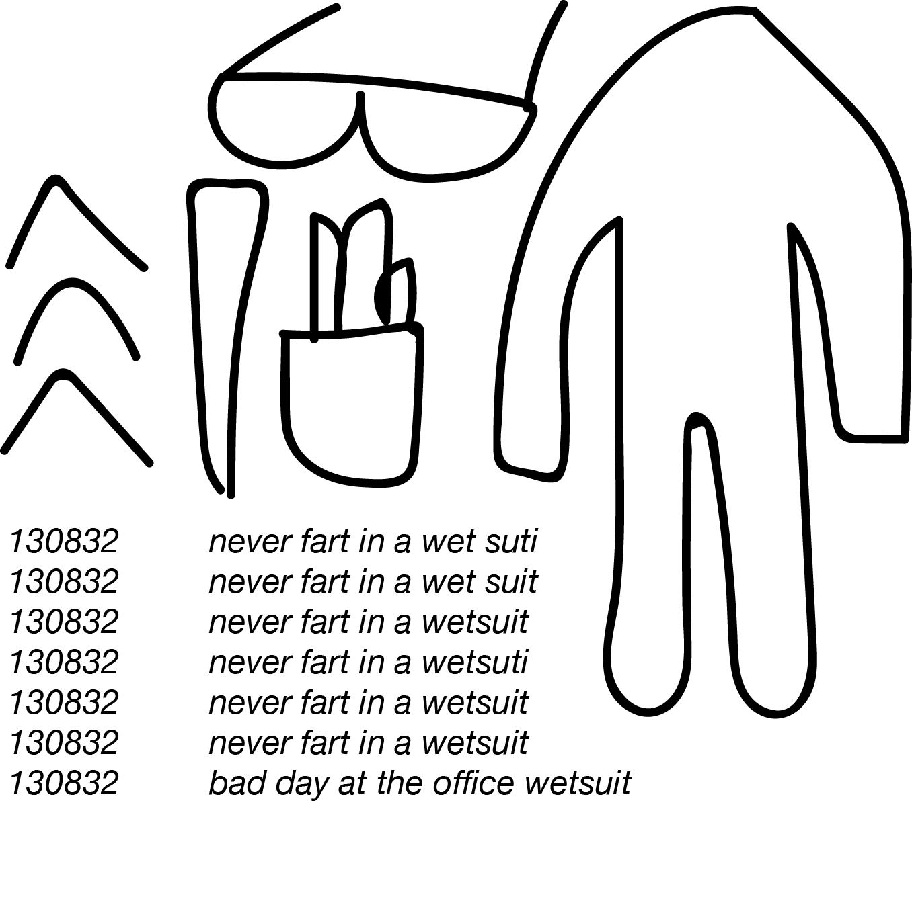

IDEA THREE - POLYVORE


Home
- Similar to the Tumblr posts idea. Creating Polyvore 'sets' that centre around one user's AOL searches
- Create a single account to keep all the sets together
- Originally a site to showcase different fashion/outfits brought together from different parts of the web. Using the website in a different context

